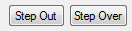
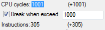

Содержание
Тип указывается в окне создания/редактирования брейкпоинта.
Брейкпоинт можно создать и без указания типа. В любой момент его можно отредактировать.
Типы Read (чтение), Write (запись) и Execute (выполнение) могут быть активны одновременно. Тип Forbit (запрет) выставляется отдельно, отменяя все остальные типы.
Список команд, активирующих Read и Write брейкпоинты, смотри в разделе с командами процессора. Некоторые команды, например INC и DEC, способны вызывать срабатывание как Read, так и Write брейкпоинтов, из-за механики работы этих команд.
Причина кроется в подсветке брейкпоинта в списке, условие которого было выполнено. Если создать 2 отдельных брейкпоинта с одинаковым условием на адрес, и разделив между ними условия Read и Write, то при срабатывании брейкпоинта ты сразу поймешь какой из них сработал по синему выделению.

Но если ты создашь один брейкпоинт с условиями Read и Write одновременно, он будет подсвечен независимо от того, какое из этих двух условий было выполнено.

Понять это можно будет только по команде, которая вызвала срабатывание брейкпоинта. Поэтому лучше не выставлять эти 2 условия в одном брейкпоинте одновременно.
Условие на чтение из адреса. Брейкпоинт сработает при попытке процессора считать байт из адреса, указанного в условии.
С помощью условия Read можно понять каким образом байт, записанный в некий адрес, влияет на игру, определив код, который считывает этот байт. Следовательно, можно определить за что отвечает данный адрес.
Read брейкпоинт отображается с флагом R.
Условие на запись в адрес. Брейкпоинт сработает при попытке процессора записать байт в адрес, указанный в условии.
С помощью условия Write можно найти, например, запись начального количества жизней, здоровья, таймеров. Также это условие поможет найти код, который изменяет это количество в процессе игры.
Write брейкпоинт отображается с флагом W.
Условие на выполнение команды по адресу. Брейкпоинт сработает при попытке процессора выполнить команду, расположенную по адресу, указанному в условии брейкпоинта.
С помощью условия Execute можно выяснить предназначение незнакомой подпрограммы, определив игровой момент, при котором код этой подпрограммы будет задействован. Также может использоваться в качестве закладок, чтобы остановить игру до того, как срабатывает брейкпоинт на интересующем адресе RAM, чтобы подробнее изучить предшествующий код.
Тип Execute недоступен для условия на тип памяти PPU Memory и Sprite Memory. Если поставить Execute, а затем изменить память с CPU Memory на другой тип, условие Execute будет деактивировано при сохранении.
Чтобы быстро добавить Execute брейкпоинт по нужному адресу, достаточно дважды кликнуть по адресу слева от команды и сохранить предложенный брейкпоинт.

Дополнительное условие K==#xx в поле ввода Condition, которое добавляется автоматически при создании Execute брейкпоинта, означает условие на PRG банк под номером #$xx.
Execute брейкпоинт отображается с флагом X.

При создании Execute брейкпоинта в поле ввода адреса можно вводить сокращения RST, NMI (или VBL) и IRQ вместо адресов обработчиков сооветствующих прерываний процессора. При сохранении адрес будет автоматически заменен на нужный.
Эти сокращения можно вводить и для любых других типов условий брейкпоинта, однако смысл это делать есть только для Execute, чтобы изучить код этих обработчиков.
Если маппер игры позволяет переключать PRG банки, то при наличии дополнительного условия K==#xx во время ввода сокращений следует правильно указать номер банка, или же удалить это условие, иначе брейкпоинт не будет срабатывать там, где это было задуманно.
Запрещает срабатывать Read, Write и Execute брейкпоинтам на тех адресах NES Memory, которые указаны в условии Forbit брейкпоинта. Если условие некого брейкпоинта выполняется, но в то же время существует Forbit брейкпоинт на адрес этой команды процессора, срабатывание по этому адресу будет проигнорировано и эмуляция продолжится.
Forbit не блокирует срабатывание прочих типов брейкпоинтов, которые описаны в отдельной статье.
С помощью условия Forbit можно отключить лишние срабатывания брейкпоинтов в определенных местах. Это значительно упрощает поиск дополнительных срабатываний брейкпоинта, особенно когда тот срабатывают ежекадрово и/или адресов срабатываний довольно много.
К примеру, если некий Read брейкпоинт срабатывает на командах, находящихся по адресам $8765 и $9876, то при выставлении Forbit на адрес $8765 (или на диапазон адресов, включающий $8765), брейкпоинт будет срабатывать только на адресе $9876. Если выставить Forbit на оба этих адреса, Read брейкпоинт вообще перестанет срабатывать на данный момент, что позволит найти еще какие-то срабатывания, продолжив играть в обычном режиме со все еще активированным Read брейкпоинтом.
Можно быстро добавить Forbit брейкпоинт точно также, как и Execute, только выставив условие Forbit перед сохранением.

Forbit брейкпоинт отображается с флагом F.